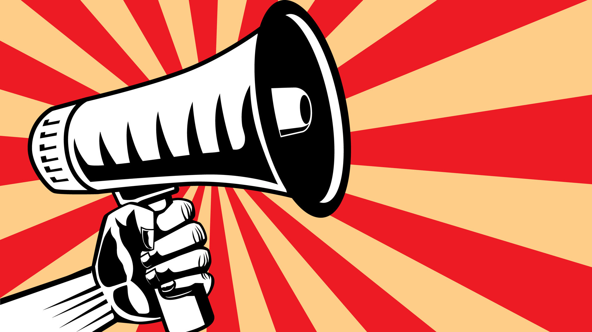

Les réseaux sociaux : Propice à la propagande ?
La Propagande sur les réseaux sociaux
Les politiques ont ils le droit et le pouvoir de contrôler les réseaux sociaux à leur avantage ? Tout d’abord il est bon de différencier la politique au sens propre comme le définit Wikipédia c’est à dire l’exercice du pouvoir de la politique au sens figuré qui consiste à promouvoir sa vision du monde et ses croyances, car ces deux formes sont bel et bien présente sur les réseaux sociaux mais de manières différentes,
Tout d’abord la politique au sens propre sur les réseaux sociaux se répand de plus en plus et devient de plus en plus commun, avec par exemple Jean-Luc Mélenchon et sa chaîne YouTube, ou même Donald Trump et ses nombreux tweets controversés ce qui lui aura même valu de vive critiques et une volontés de clôtures sont compte Twitter de la part de sénateurs. Car cette utilisation extrême des réseaux sociaux peut poser la question du bourrage de crâne avec par exemple «33 tweet et retweet de Donald Trump en 25 minutes»
Un risque pour les utilisateurs ?
On pourrait donc légitimement avoir peur d’une manipulation Mais les réseaux sociaux permettent aussi la propagation d’idée politiques comme les communautés LGBT sur Twitter promouvant l’acceptation des personnes gay,lesbiennes ,etc... ou plus largement des personnes pouvant être opprimés comme les handicapés. De l’autre côté les réseaux sociaux sont aussi un outil qu’utilisent l’état Islamique afin de faire la propagande de leur mouvement et ainsi d’attirer des jeunes perdus dans leurs filets comme vu dans cet article: ou ils essayent de copier les codes des jeunes afin de rendre leur image plus attirante,